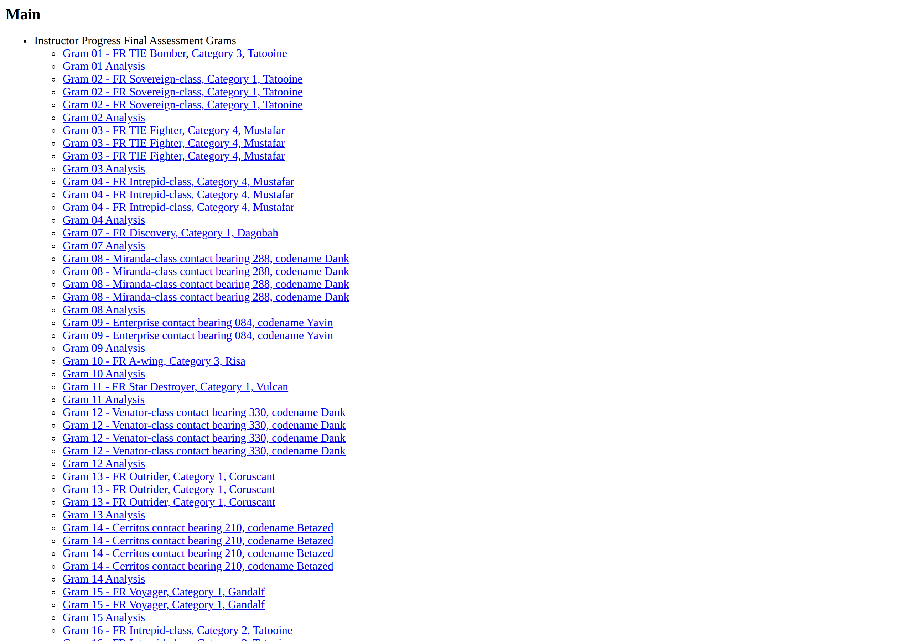
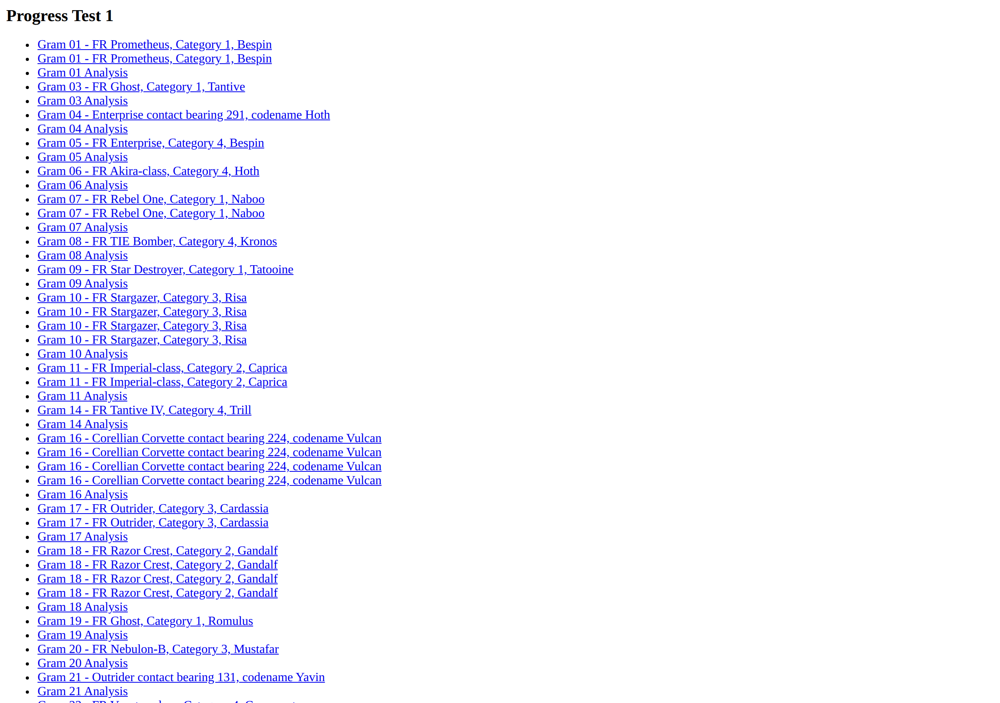

What we're solving
- ~15 instructor PowerPoints across weeks, progress tests, and a final assessment
- ~1,000 acoustic "grams" embedded as hyperlinked tiles across those decks
- Each gram: a vessel/contact title, an analysis sheet, and one or more LOFAR configurations (GLC / WAV)
- Goal: bring all of this into the modern DITA publication set (alongside pub-9 / pub-10) so it renders in instructor and trainee profiles
(instructor / trainee)
What's a "gram"?
A small, self-contained training artifact:
- Title — vessel name, category, codename
- Analysis sheet — PNG spectrogram or .docx commentary
- One or more LOFAR configs — each linking to a
.glcwaterfall file (and sometimes a.wav)
In the legacy decks each tile is a coloured box with hyperlinks. Instructors click through during a session.
A single gram tile, as seen on a legacy slide
Current state — a legacy slide

Reconstructed from Instructor Progress Test 1 Grams.pptx, slide 2.
15 gram tiles per slide. Each title and each Lofar label is a hyperlink to a file on disk.
Under the hood: what's actually in the .pptx
Excerpt from introspect_pptx.py — structural report of the real file
=== Section 1: Summary ===
Filename: Instructor Progress Test 1 Grams.pptx
Total slides: 4
Hyperlink target extensions:
.docx: 19 ← analysis sheets
.glc: 64 ← LOFAR configurations
.png: 11 ← inline analysis images
Shape-level hyperlinks: 30 ← title boxes
Text-run hyperlinks: 64 ← "Lofar 1", "Lofar 2"...
-- Slide 2 (shapes: 31) --
Rounded Rectangle 2 pos=(0.40,0.80) text='Gram 1: FR Prometheus, ...'
shape_hyperlink=...Files/Gram 1/Analysis Sheet.docx
TextBox 3 pos=(0.40,1.22) text='Lofar 1 Lofar 2'
run[0]: hyperlink=...Files/Gram 1/Lofar 1.glc
run[1]: hyperlink=...Files/Gram 1/Lofar 2 I.glcTwo different hyperlink mechanisms per gram — shape-level for the title, run-level for individual labels. Both must be extracted faithfully.
Limitations of the current state
15 isolated decks
No way to search across the whole corpus. A trainee looking for "Akira-class Cat 4" has to know which deck.
One audience only
Instructor decks reveal the vessel name. There's no automatic trainee view that hides it — that's done manually.
External hyperlinks
Each tile points to a sibling file on disk. Move or rename the parent folder and every link breaks silently.
Outside the publication toolchain
Pub-9 and pub-10 already render through DITA → Oxygen. Grams sit outside, in a different format with a different workflow.
The migration pipeline
introspect_pptx.pyextract_to_csv.pygenerate_dita.pypublish_html.py / OxygenFive small Python scripts, one third-party dependency. Designed to be debuggable on an air-gapped network.
Stage 2 — Extract to CSV
The pipeline first explodes every gram into a flat, reviewable table.
| publication | chapter | gram_id | vessel_name | topic_type | seq | topic_filename | time_end | freq_end | warnings |
|---|---|---|---|---|---|---|---|---|---|
| progress-test-1 | Gram 04 | Enterprise contact bearing 291, codename Hoth | glc | 1 | gram_04_lofar1.dita | 360 | 100 | ||
| progress-test-1 | Gram 04 | Enterprise contact bearing 291, codename Hoth | analysis | 1 | gram_04_analysis.dita | ||||
| progress-test-1 | Gram 18 | FR Razor Crest, Category 2, Gandalf | glc | 2 | gram_18_lofar2.dita | 240 | 200 |
One row per topic. The warnings column is where the next stage takes over.
Stage 3 — Human checkpoint ⭐ quality gate
The technical author opens the CSV in Excel and:
- Resolves any rows flagged with warnings (e.g. ambiguous LOFAR label, missing analysis sheet)
- Cross-checks
time_end/freq_endvalues for plausibility - Edits vessel names, sequencing, or chapter assignment as needed
- Saves — the file becomes the signed-off source of truth for generation
CSV is deliberately chosen because Excel is universal, diff-able under version control, and survives review-edit-review cycles without proprietary tooling.
Why this matters
Generation is deterministic from the CSV. Nothing gets into the published output that a human hasn't approved.
If something looks wrong in the published HTML, the fix is to correct the CSV and re-run — not to patch the output.
Stage 4 — Generate DITA
One CSV row becomes one DITA topic. Standardised, structured XML.
<topic id="gram_04_lofar1">
<title>Gram 04<ph audience="-trainee"> - Enterprise contact bearing 291, codename Hoth</ph></title>
<body>
<section>
<table outputclass="gram-config">
<tgroup cols="2"><tbody>
<row><entry namest="c1" nameend="c2">
<image href="gram_04_lofar1.wav" placement="break" align="center" />
</entry></row>
<row><entry>time-start</entry><entry>0</entry></row>
<row><entry>time-end</entry><entry>360</entry></row>
<row><entry>freq-start</entry><entry>0</entry></row>
<row><entry>freq-end</entry><entry>100</entry></row>
</tbody></tgroup>
</table>
</section>
</body>
<related-links><link href="../gram-index.dita" format="dita" /></related-links>
</topic>Note the audience="-trainee" attribute on the vessel name — that's how one source produces two profiles.
Stage 5 — Publish
From the DITA tree, the existing publication toolchain produces:
- Preview HTML via
publish_html.py(DITA-OT). Used during development. - Final publication via Oxygen, matching the look of pub-9 / pub-10.
- Filtered profiles — instructor (full content) and trainee (vessel names hidden).
The same DITA source, two different reader audiences, no duplicated content.

Combined main publication index — all decks, browsable as one set.
New end state — navigable publication

Progress Test 1, rendered as a DITA publication. Every gram — analysis sheet and each Lofar configuration — is now its own addressable topic.
A single gram, in the new publication
Live page from the generated HTML (Gram 04, LOFAR 1). Time/frequency parameters captured from the CSV. Spectrogram is illustrative — the test corpus uses placeholder media.
Live demo — browse the deck
Try clicking through. This is the actual generator output, served straight from the repo.
Benefits at a glance
Searchable, structured
One publication, ~1,000 topics, all cross-referenced. Find any gram by vessel, category, or codename without knowing which deck it's in.
Two profiles, one source
Instructor view shows the answer; trainee view hides it. Driven by a single attribute (audience="-trainee") — impossible to drift out of sync.
Consistency by construction
Every output row came through the signed-off CSV. Nothing gets published that the technical author hasn't reviewed.
In the publication toolchain
Renders through the same Oxygen flow as pub-9 / pub-10. One workflow to maintain, one look-and-feel.
Where we are — and what's next
✅ Shipped
- End-to-end pipeline:
introspect→extract→review→generate→publish - CSV round-trip safety (Excel-survivable schema)
- WAV link href as first-class CSV column (item #002, closed)
- Round-trip regression test (item #003, closed)
- 5-deck preview build under
html/
🚧 In flight / proposed
- Backlog Navigator — browse
backlog.mdfrom mobile, PR-driven edits (spec 002, planned) - WAV-row extractor test against the mock generator (item #004)
topic_filenamecollision check at load time (item #005)- Doc-rot fixes in spec branches (item #006)
Today's review is a chance to redirect this list — what would you add, drop, or re-rank?